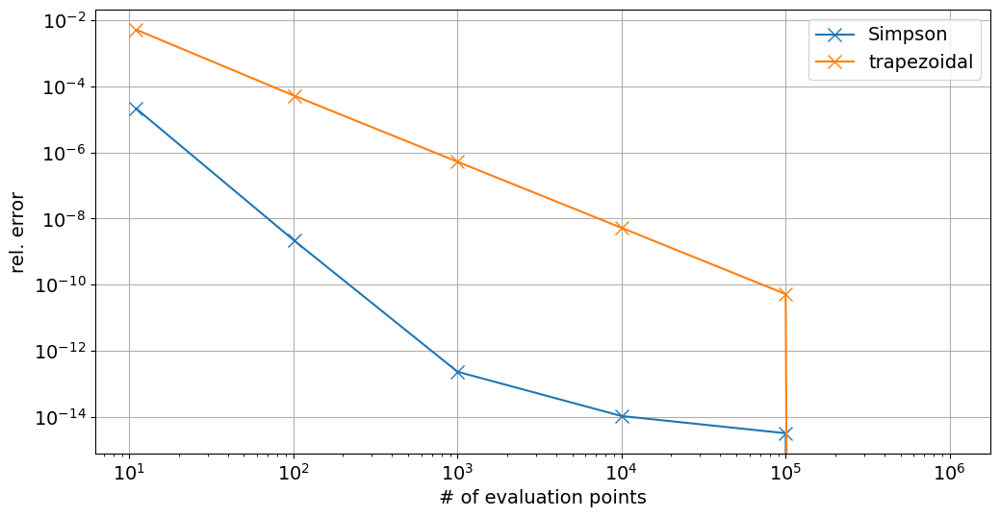

Trapezoidal and Simpson’s Rule#
Modules - Numerical Integration#
edited: Jan 2021, Tom Abel Last edited: April 7th 2023, Tom AbelThe Task#
How do we determine a definite integral like
if we cannot solve it analytically, i.e. if we cannot find a function \(F(x)\) with
and
Example#
We cannot determine the integral \( \int_0^1 \sqrt{x^5+e^{5x}} \mathrm{d}x\) analytically. So what do we do?
Let’s plot the integrand \(f(x)=\sqrt{x^5+e^{5x}}\) for \(x\in[0,1]\). First we import the necessary libraries and set some figure parameters:
%matplotlib inline
import numpy as np
import matplotlib.pyplot as plt
# Set common figure parameters
newparams = {'figure.figsize': (12, 6), 'axes.grid': True,
'lines.linewidth': 1.5, 'lines.markersize': 10,
'font.size': 14}
plt.rcParams.update(newparams)
x = np.linspace(0,1,100)
def f(x): return np.sqrt(x**5+np.exp(5*x))
plt.plot(x, f(x), label=r"$\sqrt{x^5+e^{5x}}$")
plt.legend()
plt.ylabel(r'$f(x)$')
plt.xlabel(r'$x$');
We know that the integral represents, in this case, the area under the graph. The area is well defined and finite.
We could approximate it by a Riemann sum. For this purpose, we divide the interval \([0, 1]\) into \(N − 1\) intervals of the same length \(h\) with
The endpoints of these intervals are located at
This leads naturally to the definition of a rectangle for each interval \([x_n, x_{n+1}]\) whose height is determined by the value of the function at \(x_n\), i.e. \(f(x_n)\).
For N = 6, we can sketch this in our previous plot. But first we need to define a function for drawing trapezoids:
from matplotlib.path import Path
import matplotlib.patches as patches
def draw_trapezoid(xpoints, ypoints):
""" Function for drawing trapezoids. Takes arrays of x- and y-values as input,
moving clockwise from bottom left corner. """
verts = [
(xpoints[0], ypoints[0]), # left, bottom
(xpoints[1], ypoints[1]), # left, top
(xpoints[2], ypoints[2]), # right, top
(xpoints[3], ypoints[3]), # right, bottom
(0., 0.), # ignored
]
codes = [Path.MOVETO,
Path.LINETO,
Path.LINETO,
Path.LINETO,
Path.CLOSEPOLY,
]
path = Path(verts, codes)
ax = plt.gca()
patch = patches.PathPatch(path, facecolor='#d3d3d3', lw=1)
ax.add_patch(patch)
plt.plot(x, f(x))
plt.ylabel(r'$f(x)$')
plt.xlabel(r'$x$')
# Plot rectangles:
N = 6
h = 1/(N-1)
for n in range(1,N):
draw_trapezoid([(n-1)*h,(n-1)*h,n*h,n*h], [0,f((n-1)*h),f((n-1)*h),0])
We can see that we make a fairly large error in our estimate of the integral when we use these rectangles. How can we do better?
# Well we could evaluate the function not at the end but at the midpoint of the interval.
plt.plot(x, f(x))
plt.ylabel(r'$f(x)$')
plt.xlabel(r'$x$')
# Plot rectangles:
N = 6
h = 1/(N-1)
for n in range(1,N):
height = f((n-1+0.5)*h)
draw_trapezoid([(n-1)*h,(n-1)*h,n*h,n*h], [0,height,height,0])
Trapezoidal Rule#
One way to go forward is to make the intervals smaller. In the limit when their length goes to zero, we should find the exact value of the integral.
However, this is impractical on the computer since it involves infinitely many calculations. What else can we do?
Well, a better approximation can already be obtained with our last set of intervals if we use trapezoids instead. Two sides (top and bottom) of each trapezoid are determined by the interval along the x-axis, while the other two sides (left and right) are determined by the values of the function \(f(x)\) at each end of the interval. Let’s see what this looks like in the plot.
plt.plot(x, f(x))
plt.ylabel(r'$f(x)$')
plt.xlabel(r'$x$')
# Plot trapezoids:
N = 6
h = 1/(N-1)
for n in range(N):
draw_trapezoid([(n-1)*h,(n-1)*h,n*h,n*h], [0,f((n-1)*h),f((n)*h),0])
It seems that we are making a much smaller error than before, given the same set of intervals. The error seems to increase when the curvature of the graph increases (towards the right in this plot).
Let us derive a formula for the area that the trapezoids cover. Using our notation above, the area of a trapezoid is given by
with \(f_n=f(x_n)\). Here, \(h\) is the length of each interval, and hence the length of the base of each trapezoid, and the expression
$\(\frac{f_n + f_{n+1}}{2}\)$
represents the “average height” of the corresponding trapezoid.
Adding up all the trapezoids, we obtain the total area
and so
Factoring out h and rearranging terms gives
This formula describes the trapezoidal rule and approximates the original integral.
The factors inside the bracket are 0.5, 1, 1, …, 1, 0.5. This stems from the fact that we only use the endpoints 0 and 1 once in our calculation while all other points are involved twice in the determination of trapezoidal areas.
Note that we do not need to assume an interval \([0, 1]\). Instead, we can use this method for any interval \([a, b]\). The definitions then change to
This way, we can approximate the integral by
It can be shown that this method contains an error (i.e. actual value of the definite integral vs. numerical value) that is proportional to
\((b−a)^3\),
\(\frac{1}{N^2}\), and
the (maximum) magnitude of the second derivative of \(f(x)\) over the respective interval.
Hence, doubling the amount of intervals reduces the error by a factor of four! However, choosing very large \(N\) is not a good idea for two reasons:
It increases the computational time.
The computer has finite precision; rounding errors become important!
The second derivative is linked to the curvature of the graph and we saw above that the error indeed increased where the curvature was larger. This makes sense since we are trying to approximate a curved graph with a straight line.
Let’s approximate the integral
for various \(N\). As we increase N, the values for the trapezoidal rule converge. Try it yourself!
# Define the interval
a = 0.0
b = 1.0
N = 10 # defining the amount of points making up the smaller intervals
n = np.linspace(1, N, N)
h = (b-a)/(N-1) # defining the length of each small interval
area = 0 # setting the area to zero
for i in n:
x = a + (i-1)*h
func = np.sqrt(x**5+np.exp(5*x))
if (i==1 or i==N): # First and last point
area += 0.5*func*h
else:
area += func*h
print(r'The value of the integral is %f.' % area)
The value of the integral is 4.512140.
In class exercise#
Let’s turn this into a function we call trapezoidal which takes, a, b, N and func as input and gives back the definite integral.
Double check it gives the correct result
Bonus, implement a keyword argument midpoint, which uses the trick from above that uses the linear approximation i.e. same slope but around the midpoint of the interval
Simpson’s Rule#
Question: Is there a better, i.e. more precise, method to approximate an integral? Can we do just as well with fewer intervals?
Answer: Yes, there are several methods. One method is called Simpson’s rule. The idea behind this method is that we do not approximate the graph locally by a straight line, as is the case for the trapezoidal method, but rather by a polynomial of order 2. This means that we approximate the function \(f(x)\) in each subinterval by
The parameters \(c_n\), \(d_n\), \(e_n\) are chosen so that \(f(x)\) and \(g_n(x)\) coincide at the endpoints of the interval and at its midpoint.
Example:#
Let us plot our original function and approximate it by a second-order polynomial with the above characteristics. We get the equations
which yields
# Determine the parameter values:
c_n = 2*(f(1)-2*f(0.5)+f(0))
d_n = -f(1)+4*f(0.5)-3*f(0)
e_n = f(0)
x = np.linspace(0,1,100)
def g(x): return c_n*x**2 + d_n*x + e_n
plt.plot(x, f(x), x, g(x))
plt.ylabel(r'$f(x)$')
plt.xlabel(r'$x$')
plt.legend([r'$f(x)$', r'$g(x)$'], loc=2);
We see that the polynomial describes the original function already quite well. And we have not even started to divide the interval \([0, 1]\) into subintervals…
It is important to note that Simpson’s rule requires and odd number of points (\(N\) = 3, 5, 7, …) along the \(x\)-axis since we need to use three points for each interval, i.e. left endpoint, right endpoint and midpoint.
At the same time, two adjacent intervals share one endpoint, i.e. the right endpoint of one interval coincides with the left endpoint of another interval (except at \(x = b\)).
All along, we still maintain a uniform division of the original interval \([a, b]\) into smaller subintervals.
The simplest case is using three points for the original interval, representing one interval with one midpoint:
This case is exhibited in the previous plot. In this case, it can be shown that the integral approximation reduces to
The next case uses five points: two intervals with one midpoint each. Now, we obtain
where \(h\) is the distance between two successive points along the \(x\)-axis. This scenario is plotted below.
N = 5
h = (b-a)/(N-1)
# Plot lines
color = ['r', 'g', 'r', 'g', 'r']
for i in range(N):
plt.plot([i*h, i*h],[0, f(i*h)], color[i], lw=2)
plt.plot(x, f(x),lw=2)
plt.ylabel(r'$f(x)$')
plt.xlabel(r'$x$');
The case of two intervals: \([0, 0.5]\) and \([0.5, 1]\). We have a total of 5 points along the \(x\)-axis, namely 3 interval endpoints \((x_1 = 0,\, x_3 = 0.5,\, x_5 = 1)\) and 2 midpoints \((x_2 = 0.25,\, x_4 = 0.75)\). Simpson’s rule employs second-order polynomials in each interval.
The general expression for an arbitrary number of intervals is
or using our previous notation above
Let us compute the same integral as for the trapezoidal rule, only this time using Simpson’s rule.
a = 0.0 # defining the interval
b = 1.0 # defining the interval
N = 3 # defining the amount of points making up the smaller intervals
n = np.linspace(1, N, N)
h = (b-a)/(N-1) # defining the length of each small interval
area = 0 # setting the aera to zero
for i in n:
x = a+(i-1)*h
func = np.sqrt(x**5+np.exp(5*x))
if (i==1) | (i==N): # if we are at the left or right end of the main
area += func # interval
else:
if i%2==0: # if we are at an "even" point
area += 4*func
else: # if we are at an "odd" point
area += 2*func
area = (h/3)*area # multiplying everything by h/3
print(r'The value of the integral is %f.' % area)
The value of the integral is 4.533789.
Try for different \(N\). Does it converge faster than before?
In contrast to the trapezoidal rule, Simpson’s rule contains an error that is proportional to
\((b−a)^5\),
\(\frac{1}{N^4},\) and
the (maximum) magnitude of the fourth derivative of \(f(x)\) over the respective interval.
In other words, it is superior in accuracy to the trapezoidal rule with respect to the amount of intervals \(N\).
In class exercise#
Again turn the Simpson rule into a function analogous to the trapezoidal one you made above.
\(\int 4x^3 dx = x^4\) and also \(\int 5x^4 dx = x^5\) Let’s check the answer of our functions trapezoidal and Simpson for the interval \([0..2]\) against this analytic expectation.
Now let us make a plot of the absolute of the relative error of the results of each of our integration functions as compared to the analytic expectations as a function of N (the number of intervals used in the approximation). Should be a log log plot as seen below.

Further exploration#
from scipy.integrate import trapz
from scipy.integrate import simps
from scipy.integrate import quad
Explore the use of trapz, simps and quad we imported from scipy. You can compare these with our own functions and familiarize yourself with when one would use which.
Another approach we can recommend learning more about is implemented in scipy.UnivariateSpline.